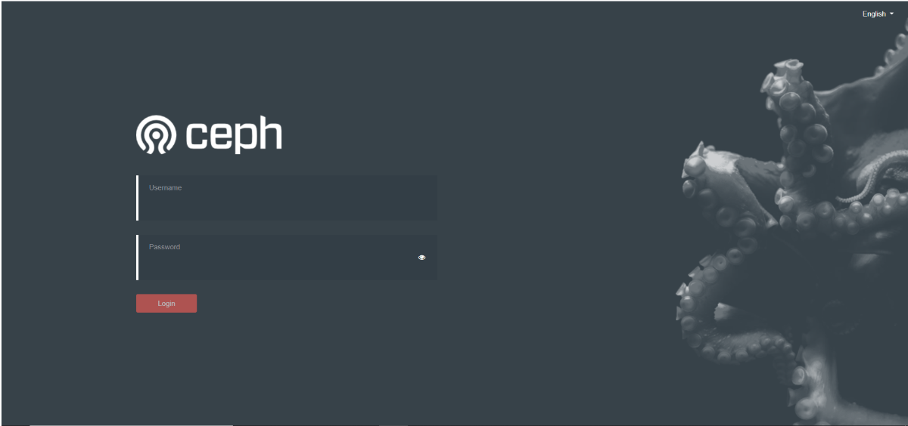

Kubernetes: k8s 高级篇-云原生存储及存储进阶
- TAGS: Kubernetes
云原生存储及存储进阶
云原生存储
什么是 StorageClass 和 CSI
Volume 回顾
volumes:
- name: share-volume
emptyDir: {}
#medium: Memory
- name: timezone
hostPath:
path: /etc/timezone
type: File
- name: nfs-volume
nfs:
server: 192.168.0.204
path: /data/nfs/test-dp
还是比较复杂，为了降低复杂度引用了 PV/PVC。遗留了动态存储 StorageClass 部分。
集群的规模很大的时候，管理 pv 也是比较麻烦的，包括创建、扩容、删除、快照等。
动态存储
StorageClass：存储类，由K8s管理员创建，用于动态PV的管理，可以链接至不同的后端存储，比如Ceph、GlusterFS等。之后对存储的请求可以指向StorageClass，然后StorageClass会自动的创建、删除PV。
实现方式：
- in-tree: 内置于K8s核心代码，对于存储的管理，都需要编写相应的代码。
- out-of-tree：由存储厂商提供一个驱动（CSI或Flex Volume），安装到K8s集群，然后StorageClass只需要配置该驱动即可，驱动器会代替StorageClass管理存储。
官方文档：https://kubernetes.io/docs/concepts/storage/storage-classes/
什么是Rook？
Rook 是一个自我管理的分布式存储编排系统，它本身并不是存储系统，在存储和 k8s 之前搭建了一个桥梁，使存储系统的搭建或者维护变得特别简单，Rook 将分布式存储系统转变为自我管理、自我扩展、自我修复的存储服务。它让一些存储的操作，比如部署、配置、扩容、升级、迁移、灾难恢复、监视和资源管理变得自动化，无需人工处理。并且 Rook 支持 CSI，可以利用 CSI 做一些 PVC 的快照、扩容、克隆等操作。
Rook 架构
Rook由Operator和Cluster两部分组成：
Operator：由一些CRD和一个All in one镜像构成，包含包含启动和监控存储系统的所有功能。主要用于有状态的服务，或者用于比较复杂应用的管理。
Cluster：负责创建CRD对象，指定相关参数，包括ceph镜像、元数据持久化位置、磁盘位置、dashboard等等…
Rook:
- Agent: 在每个存储节点上运行，用于配置一个FlexVolume插件，和k8s的存储卷进行集成。挂载网络存储、加载存储卷、格式化文件系统。
- Discover: 用于检测连接到存储节点上的设备。
Ceph:
- OSD: 直接连接每个集群节点的物理磁盘或者是目录。集群的副本数，高可用性和容错性。
- Mon: 集群监控，所有集群的节点都会向Mon汇报，他记录了集群的拓扑以及数据存储位置的信息。
- MDS: 元数据服务器，负责跟踪文件层次结构并存储Ceph元数据。如果用的是对象存储、块存储就不用 mds 了。
- RGW: restful API 接口
- MGR: 提供额外的监控和界面。

部署 Rook
Rook安装注意事项
- K8s集群至少五个节点，每个节点的内存不低于5G，CPU不低于2核
- 至少有三个存储节点，并且每个节点至少有一个裸盘
- K8s集群所有的节点时间必须一致
Rook官方文档：https://rook.io/docs/rook/v1.9/ceph-quickstart.html
实验环境最低配置
- 做这个实验需要高配置，每个节点配置不能低于**2核4G**
- k8s 1.19以上版本，快照功能需要单独安装snapshot控制器
- rook的版本大于1.3，不要使用目录创建集群，要使用单独的裸盘进行创建，也就是创建一个新的磁盘，挂载到宿主机，不进行格式化，直接使用即可。对于的磁盘节点配置如下
[root@k8s-master01 ~]# fdisk -l Disk /dev/sda: 42.9 GB, 42949672960 bytes, 83886080 sectors Units = sectors of 1 * 512 = 512 bytes Sector size (logical/physical): 512 bytes / 512 bytes I/O size (minimum/optimal): 512 bytes / 512 bytes Disk label type: dos Disk identifier: 0x000d76eb Device Boot Start End Blocks Id System /dev/sda1 * 2048 2099199 1048576 83 Linux /dev/sda2 2099200 83886079 40893440 8e Linux LVM Disk /dev/sdb: 10.7 GB, 10737418240 bytes, 20971520 sectors # 新的磁盘 Units = sectors of 1 * 512 = 512 bytes Sector size (logical/physical): 512 bytes / 512 bytes I/O size (minimum/optimal): 512 bytes / 512 bytes
部署Rook
下载Rook安装文件：
[root@k8s-master01 app]# git clone --single-branch --branch v1.5.3 https://github.com/rook/rook.git
配置更改：
[root@k8s-master01 app]# cd rook/cluster/examples/kubernetes/ceph # 修改Rook CSI镜像地址，原本的地址可能是gcr的镜像，但是gcr的镜像无法被国内访问，所以需要同步gcr的镜像到阿里云镜像仓库，文档版本已经为大家完成同步，可以直接修改如下： [root@k8s-master01 ceph]# vim operator.yaml #47-52行更改为： ROOK_CSI_CEPH_IMAGE: "quay.io/cephcsi/cephcsi:v3.1.2" ROOK_CSI_REGISTRAR_IMAGE: "registry.cn-beijing.aliyuncs.com/dotbalo/csi-node-driver-registrar:v2.0.1" ROOK_CSI_RESIZER_IMAGE: "registry.cn-beijing.aliyuncs.com/dotbalo/csi-resizer:v1.0.0" ROOK_CSI_PROVISIONER_IMAGE: "registry.cn-beijing.aliyuncs.com/dotbalo/csi-provisioner:v2.0.0" ROOK_CSI_SNAPSHOTTER_IMAGE: "registry.cn-beijing.aliyuncs.com/dotbalo/csi-snapshotter:v3.0.0" ROOK_CSI_ATTACHER_IMAGE: "registry.cn-beijing.aliyuncs.com/dotbalo/csi-attacher:v3.0.0" # 如果是其他版本，需要自行同步，同步方法可以在网上找到相关文章。 # 还是operator文件，新版本rook默认关闭了自动发现磁盘，可以找到ROOK_ENABLE_DISCOVERY_DAEMON改成true即可： # ROOK_ENABLE_DISCOVERY_DAEMON改成true即可： - name: ROOK_ENABLE_DISCOVERY_DAEMON value: "true"
部署rook：
# 1、进到/rook/cluster/examples/kubernetes/ceph目录 [root@k8s-master01 ceph]# pwd /app/rook/cluster/examples/kubernetes/ceph # 2、部署 [root@k8s-master01 ceph]# kubectl create -f crds.yaml -f common.yaml -f operator.yaml # 3、等待operator容器和discover容器启动（全部变成1/1 Running 才可以创建Ceph集群） [root@k8s-master01 ceph]# kubectl get pod -n rook-ceph -owide
使用 Rook 搭建 Ceph 集群
ceph 生产环境有条件的话建议用原生安装，不建议部署在 k8s 内部。
配置更改
主要更改的是osd节点所在的位置
[root@k8s-master01 ceph]# vim cluster.yaml # 1、更改storage（自己指定使用磁盘的节点） ... ... 原配置: storage: # cluster level storage configuration and selection useAllNodes: true useAllDevices: true 更改为: storage: # cluster level storage configuration and selection useAllNodes: false # 是否使用所有节点当 osd useAllDevices: false # 是否使用缩主机上所有的磁盘 ... ... - name: "k8s-master03" devices: - name: "sdb" - name: "k8s-node01" devices: - name: "sdb" - name: "k8s-node02" devices: - name: "sdb" ... ...
注意：新版必须采用裸盘，即未格式化的磁盘。其中k8s-master03 k8s-node01 node02有新加的一个磁盘，可以通过lsblk -f查看新添加的磁盘名称。建议最少三个节点，否则后面的试验可能会出现问题
创建Ceph集群
[root@k8s-master01 ceph]# kubectl create -f cluster.yaml cephcluster.ceph.rook.io/rook-ceph created # 创建完成后，可以查看pod的状态 [root@k8s-master01 ceph]# kubectl -n rook-ceph get pod
安装ceph snapshot控制器
k8s 1.19版本以上需要单独安装snapshot控制器，才能完成pvc的快照功能，所以在此提前安装下，如果是1.19以下版本，不需要单独安装。
# 1、snapshot控制器的部署在集群安装时的k8s-ha-install项目中，需要切换到1.20.x分支 [root@k8s-master01 ~]# cd /root/k8s-ha-install/ [root@k8s-master01 k8s-ha-install]# git checkout manual-installation-v1.20.x # 2、创建snapshot controller [root@k8s-master01 k8s-ha-install]# kubectl create -f snapshotter/ -n kube-system # 3、查看snapshot controller状态 [root@k8s-master01 k8s-ha-install]# kubectl get po -n kube-system -l app=snapshot-controller NAME READY STATUS RESTARTS AGE snapshot-controller-0 1/1 Running 0 15s
Ceph Dashboard 和客户端工具安装
安装ceph客户端工具
# 1、安装 [root@k8s-master01 ceph]# pwd /app/rook/cluster/examples/kubernetes/ceph [root@k8s-master01 ceph]# kubectl create -f toolbox.yaml -n rook-ceph deployment.apps/rook-ceph-tools created # 2、待容器Running后，即可执行相关命令 [root@k8s-master01 ceph]# kubectl get po -n rook-ceph -l app=rook-ceph-tools NAME READY STATUS RESTARTS AGE rook-ceph-tools-6f7467bb4d-r9vqx 1/1 Running 0 31s # 3、执行命令ceph status [root@k8s-master01 ceph]# kubectl -n rook-ceph exec -it deploy/rook-ceph-tools -- bash [root@rook-ceph-tools-6f7467bb4d-r9vqx /]# ceph status cluster: id: 83c11641-ca98-4054-b2e7-422e942befe6 health: HEALTH_OK services: mon: 1 daemons, quorum a (age 43m) mgr: a(active, since 13m) osd: 3 osds: 3 up (since 18m), 3 in (since 44m) data: pools: 1 pools, 1 pgs objects: 0 objects, 0 B usage: 3.0 GiB used, 27 GiB / 30 GiB avail pgs: 1 active+clean # 4、执行命令 [root@rook-ceph-tools-6f7467bb4d-r9vqx /]# ceph osd status ID HOST USED AVAIL WR OPS WR DATA RD OPS RD DATA STATE 0 k8s-master03 1028M 9207M 0 0 0 0 exists,up 1 k8s-node01 1028M 9207M 0 0 0 0 exists,up 2 k8s-node02 1028M 9207M 0 0 0 0 exists,up # 5、执行命令-查看状态 [root@rook-ceph-tools-6f7467bb4d-r9vqx /]# ceph df --- RAW STORAGE --- CLASS SIZE AVAIL USED RAW USED %RAW USED hdd 30 GiB 27 GiB 14 MiB 3.0 GiB 10.05 TOTAL 30 GiB 27 GiB 14 MiB 3.0 GiB 10.05 --- POOLS --- POOL ID STORED OBJECTS USED %USED MAX AVAIL device_health_metrics 1 0 B 0 0 B 0 8.5 GiB
Ceph dashboard
- 暴露服务
1、默认情况下，ceph dashboard是打开的，可以通过以下命令查看ceph dashboard的service
[root@k8s-master01 ceph]# kubectl -n rook-ceph get service rook-ceph-mgr-dashboard NAME TYPE CLUSTER-IP EXTERNAL-IP PORT(S) AGE rook-ceph-mgr-dashboard ClusterIP 10.97.5.123 <none> 8443/TCP 47m
2、可以两种方式访问：
- 将该service改为NodePort
- 通过ingress代理
[root@k8s-master01 ceph]# kubectl -n rook-ceph edit service rook-ceph-mgr-dashboard # 更改type类型即可 type: NodePort # 访问、任意节点ip:port访问即可 [root@k8s-master01 ceph]# kubectl -n rook-ceph get service rook-ceph-mgr-dashboard NAME TYPE CLUSTER-IP EXTERNAL-IP PORT(S) AGE rook-ceph-mgr-dashboard NodePort 10.97.5.123 <none> 8443:32202/TCP 49m
 3、登录、账号为admin，查看密码
[root@k8s-master01 ~]# kubectl -n rook-ceph get secret rook-ceph-dashboard-password -o jsonpath="{['data']['password']}" | base64 --decode && echo @}g"P{-FVe9yb]-AV/>3
StorageClass动态存储-块存储
块存储一般用于一个Pod挂载一块存储使用，相当于一个服务器新挂了一个盘，只给一个应用使用。
创建StorageClass和ceph的存储池
# 1、创建文件 [root@k8s-master01 ~]# cd /app/rook/cluster/examples/kubernetes/ceph/ [root@k8s-master01 ceph]# vim storageclass.yaml apiVersion: ceph.rook.io/v1 kind: CephBlockPool metadata: name: replicapool namespace: rook-ceph spec: failureDomain: host replicated: size: 3 --- apiVersion: storage.k8s.io/v1 kind: StorageClass metadata: name: rook-ceph-block # Change "rook-ceph" provisioner prefix to match the operator namespace if needed provisioner: rook-ceph.rbd.csi.ceph.com parameters: # clusterID is the namespace where the rook cluster is running clusterID: rook-ceph # Ceph pool into which the RBD image shall be created pool: replicapool imageFormat: "2" imageFeatures: layering csi.storage.k8s.io/provisioner-secret-name: rook-csi-rbd-provisioner csi.storage.k8s.io/provisioner-secret-namespace: rook-ceph csi.storage.k8s.io/controller-expand-secret-name: rook-csi-rbd-provisioner csi.storage.k8s.io/controller-expand-secret-namespace: rook-ceph csi.storage.k8s.io/node-stage-secret-name: rook-csi-rbd-node csi.storage.k8s.io/node-stage-secret-namespace: rook-ceph csi.storage.k8s.io/fstype: ext4 # Delete the rbd volume when a PVC is deleted reclaimPolicy: Delete # 2、创建块 [root@k8s-master01 ceph]# kubectl create -f storageclass.yaml cephblockpool.ceph.rook.io/replicapool created storageclass.storage.k8s.io/rook-ceph-block created # 3、查看状态 [root@k8s-master01 ceph]# kubectl get CephBlockPool -n rook-ceph NAME AGE replicapool 2m14s [root@k8s-master01 ceph]# kubectl get sc NAME PROVISIONER RECLAIMPOLICY VOLUMEBINDINGMODE ALLOWVOLUMEEXPANSION AGE rook-ceph-block rook-ceph.rbd.csi.ceph.com Delete Immediate false 2m47s
挂载测试-PVC申请动态PV
#创建一个MySQL服务 [root@k8s-master01 kubernetes]# pwd /app/rook/cluster/examples/kubernetes [root@k8s-master01 kubernetes]# kubectl create -f mysql.yaml [root@k8s-master01 kubernetes]# kubectl create -f wordpress.yaml # 查看svc [root@k8s-master01 kubernetes]# kubectl get svc wordpress NAME TYPE CLUSTER-IP EXTERNAL-IP PORT(S) AGE wordpress LoadBalancer 10.109.161.119 <pending> 80:32301/TCP 3m57s
该文件有一段pvc的配置
pvc会连接刚才创建的storageClass，然后动态创建pv，然后连接到ceph创建对应的存储
之后创建pvc只需要指定storageClassName为刚才创建的StorageClass名称即可连接到rook的ceph。如果是statefulset，只需要将volumeTemplateClaim里面的Claim名称改为StorageClass名称即可动态创建Pod，具体请听视频。
其中MySQL deployment的volumes配置挂载了该pvc：
claimName为pvc的名称
因为MySQL的数据不能多个MySQL实例连接同一个存储，所以一般只能用块存储。相当于新加了一块盘给MySQL使用。
创建完成后可以查看创建的pvc和pv
[root@k8s-master01 kubernetes]# kubectl get pv NAME CAPACITY ACCESS MODES RECLAIM POLICY STATUS CLAIM STORAGECLASS REASON AGE pvc-1843c13e-09cb-46c6-9dd8-5f54a834681b 20Gi RWO Delete Bound default/mysql-pv-claim rook-ceph-block 65m [root@k8s-master01 kubernetes]# kubectl get pvc NAME STATUS VOLUME CAPACITY ACCESS MODES STORAGECLASS AGE mysql-pv-claim Bound pvc-1843c13e-09cb-46c6-9dd8-5f54a834681b 20Gi RWO rook-ceph-block 66m
此时在ceph dashboard上面也可以查看到对应的image
StatefulSet volumeClaimTemplates动态存储
https://kubernetes.io/docs/concepts/workloads/controllers/statefulset/
通过一个模板 volumeClaimTemplates 为每个 pod 创建一个 pvc。
StorageClass动态存储-文件共享型存储
共享文件系统一般用于多个Pod共享一个存储
官方文档：https://rook.io/docs/rook/v1.6/ceph-filesystem.html
默认情况下，只能使用Rook创建一个共享文件系统。Ceph中的多文件系统支持仍被认为是实验性的，可以使用中 ROOK_ALLOW_MULTIPLE_FILESYSTEMS 定义的环境变量启用operator.yaml。
创建共享类型的文件系统
通过为 CephFilesystem CRD中的元数据池，数据池和元数据服务器指定所需的设置来创建文件系统
[root@k8s-master01 kubernetes]# pwd /app/rook/cluster/examples/kubernetes [root@k8s-master01 kubernetes]# vim filesystem.yaml apiVersion: ceph.rook.io/v1 kind: CephFilesystem metadata: name: myfs namespace: rook-ceph spec: metadataPool: # 原数据副本数 replicated: size: 3 dataPools: # 数据副本数 - replicated: size: 3 preserveFilesystemOnDelete: true metadataServer: # 原数据服务副本数 activeCount: 1 activeStandby: true # 启了个从节点 # 创建 [root@k8s-master01 kubernetes]# kubectl create -f filesystem.yaml cephfilesystem.ceph.rook.io/myfs created # 查看，一个主，一个备 [root@k8s-master01 kubernetes]# kubectl -n rook-ceph get pod -l app=rook-ceph-mds NAME READY STATUS RESTARTS AGE rook-ceph-mds-myfs-a-5d8547c74d-vfvx2 1/1 Running 0 90s rook-ceph-mds-myfs-b-766d84d7cb-wj7nd 1/1 Running 0 87s
创建共享类型文件系统的StorageClass
官网：https://rook.io/docs/rook/v1.5/ceph-filesystem.html apiVersion: storage.k8s.io/v1 kind: StorageClass metadata: name: rook-cephfs # Change "rook-ceph" provisioner prefix to match the operator namespace if needed provisioner: rook-ceph.cephfs.csi.ceph.com parameters: # clusterID is the namespace where operator is deployed. clusterID: rook-ceph # CephFS filesystem name into which the volume shall be created fsName: myfs # Ceph pool into which the volume shall be created # Required for provisionVolume: "true" pool: myfs-data0 # Root path of an existing CephFS volume # Required for provisionVolume: "false" # rootPath: /absolute/path # The secrets contain Ceph admin credentials. These are generated automatically by the operator # in the same namespace as the cluster. csi.storage.k8s.io/provisioner-secret-name: rook-csi-cephfs-provisioner csi.storage.k8s.io/provisioner-secret-namespace: rook-ceph csi.storage.k8s.io/controller-expand-secret-name: rook-csi-cephfs-provisioner csi.storage.k8s.io/controller-expand-secret-namespace: rook-ceph csi.storage.k8s.io/node-stage-secret-name: rook-csi-cephfs-node csi.storage.k8s.io/node-stage-secret-namespace: rook-ceph reclaimPolicy: Delete
文件共享型存储使用示例
nginx
apiVersion: v1
kind: Service
metadata:
name: nginx
labels:
app: nginx
spec:
ports:
- port: 80
name: web
selector:
app: nginx
type: ClusterIP
---
kind: PersistentVolumeClaim
apiVersion: v1
metadata:
name: nginx-share-pvc
spec:
storageClassName: rook-cephfs
accessModes:
- ReadWriteMany
resources:
requests:
storage: 1Gi
---
apiVersion: apps/v1
kind: Deployment
metadata:
name: web
spec:
selector:
matchLabels:
app: nginx # has to match .spec.template.metadata.labels
replicas: 3 # by default is 1
template:
metadata:
labels:
app: nginx # has to match .spec.selector.matchLabels
spec:
containers:
- name: nginx
image: nginx
imagePullPolicy: IfNotPresent
ports:
- containerPort: 80
name: web
volumeMounts:
- name: www
mountPath: /usr/share/nginx/html
volumes:
- name: www
persistentVolumeClaim:
claimName: nginx-share-pvc
存储进阶
PVC在线扩容
文件共享类型的PVC扩容需要k8s 1.15+
块存储类型的PVC扩容需要k8s 1.16+
PVC扩容需要开启ExpandCSIVolumes，新版本的k8s已经默认打开了这个功能，可以查看自己的k8s版本是否已经默认打开了该功能：
[root@k8s-master01 kubernetes]# kube-apiserver -h |grep ExpandCSIVolumes ExpandCSIVolumes=true|false (BETA - default=true)
如果default为true就不需要打开此功能，如果default为false，需要开启该功能。
$ kubectl get sc gp3 -oyaml allowVolumeExpansion: true
扩容文件共享型PVC
将大小修改为2Gi，之前是1Gi.
kubectl edit pvc cephfs-pvc -n kube-system requests: storage: 2Gi
查看容器内是否已经完成扩容：
kubectl exec -ti kube-registry-66d4c7bf47-46bpq -n kube-system -- df -Th | grep "/var/lib/registry"
扩容块存储
扩容步骤类似，找到PVC，直接edit即可
kubectl edit pvc mysql-pv-claim
也可以看到ceph dashboard的image也完成了扩容，但是pvc和pod里面的状态会有延迟，大概等待5-10分钟后，即可完成扩容：
PVC 快照
注意：PVC快照功能需要k8s 1.17+
块存储快照
- 创建 snapshotClass
# pwd /root/rook/cluster/examples/kubernetes/ceph/csi/rbd # kubectl create -f snapshotclass.yaml
- 创建快照
修改snapshot.yaml文件的source pvc为创建的MySQL pvc
apiVersion: snapshot.storage.k8s.io/v1 kind: VolumeSnapshot metadata: name: new-snapshot-test spec: volumeSnapshotClassName: csi-hostpath-snapclass source: persistentVolumeClaimName: pvc-test kubectl get volumesnapshotpersistentVolumeClaimName 是 PersistentVolumeClaim 数据源对快照的名称。 这个字段是动态制备快照中的必填字段。
卷快照可以通过指定 VolumeSnapshotClass 使用 volumeSnapshotClassName 属性来请求特定类。如果没有设置，那么使用默认类（如果有）
PVC 数据回滚
- 指定快照创建PVC
如果想要创建一个具有某个数据的PVC，可以从某个快照恢复：
[root@k8s-master01 rbd]# cat pvc-restore.yaml --- apiVersion: v1 kind: PersistentVolumeClaim metadata: name: rbd-pvc-restore spec: storageClassName: rook-ceph-block dataSource: name: rbd-pvc-snapshot kind: VolumeSnapshot apiGroup: snapshot.storage.k8s.io accessModes: - ReadWriteOnce resources: requests: storage: 3Gi [root@k8s-master01 rbd]# kubectl create -f pvc-restore.yaml persistentvolumeclaim/rbd-pvc-restore created注意：dataSource为快照名称，storageClassName为新建pvc的storageClass，storage的大小不能低于原pvc的大小
- 8.1.4 数据校验
创建一个容器，挂载该PVC，查看是否含有之前的文件：
文件共享类型快照
操作步骤和块存储类型无区别，可以参考： https://rook.io/docs/rook/v1.6/ceph-csi-snapshot.html#cephfs-snapshots
PVC克隆
[root@k8s-master01 rbd]# pwd
/root/rook/cluster/examples/kubernetes/ceph/csi/rbd
[root@k8s-master01 rbd]# cat pvc-clone.yaml
---
apiVersion: v1
kind: PersistentVolumeClaim
metadata:
name: rbd-pvc-clone
spec:
storageClassName: rook-ceph-block
dataSource:
name: mysql-pv-claim
kind: PersistentVolumeClaim
accessModes:
- ReadWriteOnce
resources:
requests:
storage: 3Gi
[root@k8s-master01 rbd]# kubectl create -f pvc-clone.yaml
persistentvolumeclaim/rbd-pvc-clone created
[root@k8s-master01 rbd]# kubectl get pvc
NAME STATUS VOLUME CAPACITY ACCESS MODES STORAGECLASS AGE
mysql-pv-claim Bound pvc-fd8b9860-c0d4-4797-8e1d-1fab880bc9fc 3Gi RWO rook-ceph-block 110m
rbd-pvc-clone Bound pvc-6dda14c9-9d98-41e6-9d92-9d4ea382c614 3Gi RWO rook-ceph-block 4s
需要注意的是pvc-clone.yaml的dataSource的name是被克隆的pvc名称，在此是mysql-pv-claim，storageClassName为新建pvc的storageClass名称，storage不能小于之前pvc的大小。
Rook Ceph集群清理
如果Rook要继续使用，可以只清理创建的deploy、pod、pvc即可。之后可以直接投入使用
数据清理步骤：
- 首先清理挂载了PVC和Pod，可能需要清理单独创建的Pod和Deployment或者是其他的高级资源
- 之后清理PVC，清理掉所有通过ceph StorageClass创建的PVC后，最好检查下PV是否被清理
- 之后清理快照：kubectl delete volumesnapshot XXXXXXXX
- 之后清理创建的Pool，包括块存储和文件存储
- kubectl delete -n rook-ceph cephblockpool replicapool
- kubectl delete -n rook-ceph cephfilesystem myfs
- 清理StorageClass：kubectl delete sc rook-ceph-block rook-cephfs
- 清理Ceph集群：kubectl -n rook-ceph delete cephcluster rook-ceph
- 删除Rook资源：
- kubectl delete -f operator.yaml
- kubectl delete -f common.yaml
- kubectl delete -f crds.yaml
如果卡住需要参考Rook的troubleshooting
a) https://rook.io/docs/rook/v1.6/ceph-teardown.html#troubleshooting a
for CRD in $(kubectl get crd -n rook-ceph | awk '/ceph.rook.io/ {print $1}'); do kubectl get -n rook-ceph "$CRD" -o name | xargs -I {} kubectl patch {} --type merge -p '{"metadata":{"finalizers": [null]}}' -n rook-ceph; done
- 清理数据目录和磁盘
参考链接：https://rook.io/docs/rook/v1.6/ceph-teardown.html#delete-the-data-on-hosts
ceph 创建和删除osd
概述
本次主要是使用ceph-deploy工具和使用ceph的相关命令实现在主机上指定磁盘创建和删除osd，本次以主机172.16.1.96(主机名hadoop96)为例，此主机系统盘为/dev/sda, 其他盘有/dev/sdb、/dev/sdc和/dev/sdd，这几个盘都是裸磁盘，目的是使用这几个盘的组合创建osd。
磁盘情况如下图：
创建osd
使用ceph-deploy(工具安装在hadoop95上)创建osd，这里创建两个osd，其中一个数据和日志在同一个磁盘上，另外的osd日志被独立到另一个盘。
1）数据和日志在同一个磁盘上
执行ceph-deploy osd create hadoop96:/dev/sdb,然后在hadoop96上查看如下图：
进入/var/lib/ceph/osd/ceph-4目录查看
如上图可知日志目录被链接到/dev/disk/by-partuuid/17f23e99-13dc-4a15-827b-745213c5c3dd，我们查看/dev/disk/by-partuuid/17f23e99-13dc-4a15-827b-745213c5c3dd，如下图：
说明/dev/sdb2被作为日志的分区使用，所以新创建的osd.4默认数据和日志都在同一个磁盘/dev/sdb上不同分区。
2）osd日志被独立到另一个盘
执行ceph-deploy osd create hadoop96:/dev/sdc:/dev/sdd,然后在hadoop96上查看如下图：
进入/var/lib/ceph/osd/ceph-5目录查看
如上图可知日志目录被链接到/dev/disk/by-partuuid/96eb886f-4095-4cb4-90fc-2976a8869cc1，我们查看/dev/disk/by-partuuid/96eb886f-4095-4cb4-90fc-2976a8869cc1，如下图：
说明/dev/sdd1被作为日志的分区使用，所以新创建的osd.5数据在/dev/sdc1，而日志则独立在另一个磁盘的分区/dev/sdd1。
删除osd
删除上面创建的osd。
1）数据和日志在同一个磁盘上的osd
将osd.4踢出集群，执行ceph osd out 4
停止此osd进程，执行systemctl stop [ceph-osd@4](mailto:ceph-osd@4)
然后执行：ceph osd crush remove osd.4,此时osd.4已经不再osd tree中了
执行ceph auth del osd.4 和 ceph osd rm 4, 此时删除成功但是原来的数据和日志目录还在，也就是数据还在
此时我们将/dev/sdb1磁盘umount,然后将磁盘进行擦除那么数据就会被完全删除了，执行umount /dev/sdb,然后执行ceph-disk zap /dev/sdb
这时/dev/sdb又成为裸磁盘了，也就相当于彻底删除了osd.4。
2)删除日志被独立到另一个盘的osd
执行步骤和之前类似。
将osd.5踢出集群，执行ceph osd out 5
停止此osd进程，执行systemctl stop ceph-osd@4
然后执行：ceph osd crush remove osd.5,此时osd.5已经不再osd tree中了
执行ceph auth del osd.5和 ceph osd rm 5, 此时删除成功但是原来的数据和日志目录还在，也就是数据还在
此时我们将/dev/sdc1磁盘umount,然后将磁盘进行擦除那么数据就会被完全删除了，执行umount /dev/sdc1,然后执行ceph-disk zap /dev/sdc
这时/dev/sdc又成为裸磁盘了，也就相当于彻底删除了osd.5，但是原来作为日志的分区/dev/sdd1还在，此时如果sdd有多个分区作为其他osd的日志分区那么就不能擦除/dev/sdd盘，但是此时/dev/sdd1分区已经没有被osd使用了所以再创建osd时要记得再利用，目前我觉得只能这样。
ceph_dashboard
ph仪表板是基于Web的内置Ceph管理和监视应用程序，用于管理集群的各个方面和对象。它作为Ceph Manager守护程序的模块实现。
从Luminous开始，Ceph 提供了原生的Dashboard功能，通过Dashboard可以获取Ceph集群的各种基本状态信息，而且经过不断更新，现在已经有了各种管理功能。
dashboard
安装dashboard模块软件包
dashboard作为mgr的模块存在，需要安装一下模块的软件包。
包的名字叫做: ceph-mgr-dashboard, 使用ceph的yum源安装就可以。
yum install ceph-mgr-dashboard -y
所有mgr节点都需要安装，不然在启用dashboard模块的时候会报错:
[root@cephnode1 ~]# ceph mgr module enable dashboardError ENOENT: all mgr daemons do not support module 'dashboard', pass --force to force enablement
启用dashboard
可以使用 ceph mgr module ls 查看一下模块列表。这个列表跟安没安装ceph-mgr-dashboard没关系。
可以看到启用的模块里没有dashboard:
"enabled_modules": [ "iostat", "pg_autoscaler", "restful" ],
执行 ceph mgr module enable dashboard 来启用dashboard。
[root@cephnode1 ~]# ceph mgr module enable dashboard
启用以后就会有监听端口了，默认是8443。
配置dashboard
提供证书
默认情况下，dashboard提供https访问。所以需要证书。
有三种方式：
- 一是使用ceph dashboard生成自签名证书。
- 二是指定提供的证书。
- 三是不使用https。
- 生成自签名证书：
[root@cephnode1 ~]# ceph dashboard create-self-signed-certSelf-signed certificate created
- 指定证书
$ ceph dashboard set-ssl-certificate -i dashboard.crt$ ceph dashboard set-ssl-certificate-key -i dashboard.key
- 取消https
ceph config set mgr mgr/dashboard/ssl false
修改证书或者修改配置以后需要重启dashboard模块来生效。
$ ceph mgr module disable dashboard$ ceph mgr module enable dashboard
修改dashboard监听的端口
默认情况下，监听所有地址的8443或8080
修改监听的地址与端口：
$ ceph config set mgr mgr/dashboard/server_addr $IP$ ceph config set mgr mgr/dashboard/server_port $PORT$ ceph config set mgr mgr/dashboard/ssl_server_port $PORT
如，修改https端口为8843。
[root@cephnode1 ~]# ceph config set mgr mgr/dashboard/ssl_server_port 8843# 重启模块生效，可以看一下监听的端口有没有变化。[root@cephnode1 ~]# ceph mgr module disable dashboard[root@cephnode1 ~]# ceph mgr module enable dashboard
登录用户
为了能够登录，需要创建一个用户帐户并将其与至少一个角色相关联， dashboard提供了一组可以使用的预定义系统角色。如administrator表示管理员。
要创建具有管理员角色的用户，可以使用以下命令：
$ ceph dashboard ac-user-create <username> <password> administrator
如：
[root@cephnode1 ~]# ceph dashboard ac-user-create mydashboard abcdefg administrator{"username": "mydashboard", "lastUpdate": 1584676335, "name": null, "roles": ["administrator"], "password": "$2b$12$uNxxDZgdrlCZwfQZlLwgL.L0F9aKSYznqnyfX2Lc3BBDqhZDEv9wC", "email": null}
现在dashboard就已经可以访问了。只是其中的rgw管理的功能还不可以用。
我这里按下面的步骤都做完，还有官网提到的一些其他点，最后还是不能管理rgw，暂时还不知道怎么回事。
为dashboard添加rgw的管理凭据
因为rgw是一个单独的组件，dashboard不能直接管理，需要创建凭据让dashboard有权限管理rgw。
如果不需要dashboard管理rgw，这一步可以跳过。
> 要使用dashboard管理rgw的功能，需要提供启用了system标志的用户凭据。
如果有用户，使用下面这个命令获取凭据信息。
radosgw-admin user info --uid=<user_id>
没有则需要创建。
$ radosgw-admin user create --uid=<user_id> --display-name=<display_name> \ --system
如：
[root@cephnode1 ~]# radosgw-admin user create --uid=dashboard --display-name=dashboard{ "user_id": "dashboard", "display_name": "dashboard", "email": "", "suspended": 0, "max_buckets": 1000, "subusers": [], "keys": [ { "user": "dashboard", "access_key": "MOEG3CY0LEB8JETFFA5Z", "secret_key": "DaJBFSnyV9CgEBkRTEpYn9Tk391IppOkgybRx0wu" } ], "swift_keys": [], "caps": [],
记下显示的 access_key 与 secret_key
最后，向dashboard提供凭据，以便让它可以连接rgw：
$ ceph dashboard set-rgw-api-access-key <access_key>$ ceph dashboard set-rgw-api-secret-key <secret_key>
如：
[root@cephnode1 ~]# ceph dashboard set-rgw-api-access-key MOEG3CY0LEB8JETFFA5ZOption RGW_API_ACCESS_KEY updated[root@cephnode1 ~]# ceph dashboard set-rgw-api-secret-key DaJBFSnyV9CgEBkRTEpYn9Tk391IppOkgybRx0wuOption RGW_API_SECRET_KEY updated
登录
查看mgr中的服务
可以使用 ceph mgr services 查看mgr中提供的服务。可以确定dashboard的登录地址与端口。
[root@cephnode1 ~]# ceph mgr services{ "dashboard": "https://cephnode1:8843/"}[root@cephnode1 ~]#
最后
打开网址登录
我这里能够登录，但是Object Gateway(rgw)访问还是有问题。
其他的dashhboard命令可以通过 ceph dashboard --help 查看。
启用Prometheus监控接口
就是暴露出去一个metrics接口，让prometheus使用。
启用prometheus模块就行。
[root@cephnode1 ~]# ceph mgr module enable prometheus
端口9283就可以直接访问了。
这里就是简单提一下， 至于prometheus与grafana的配置就略过了。